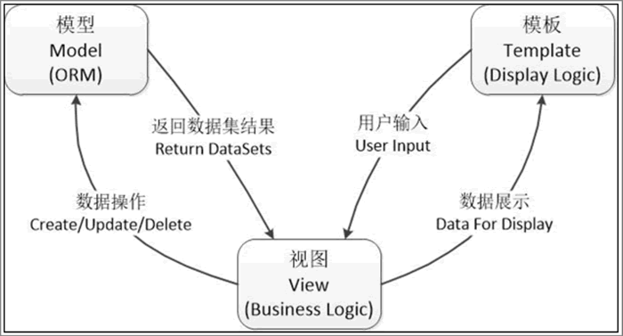
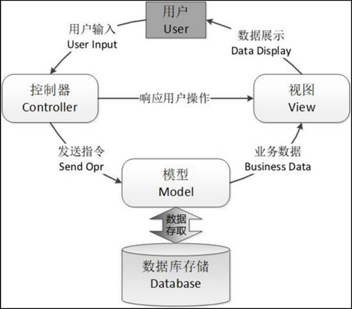

Django
诞生和发展
- Django是高水准的Python编程语言驱动的一个开源模型．视图，控制器 (MVC) 风格的Web应用程序框架，它起源于开源社区
- 使用这种架构，程序员可以方便、快捷地创建高品质、易维护、数据库驱动的应用程序。这也正是OpenStack的Horizon组件采用这种架构进行设计的主要原因
- 另外，在Django框架中，还包含许多功能强大的第三方插件，使得Django具有较强的可扩展性
MVT设计原理
- 大多数的Web开发者对于MVC(Model, View, Controller) 设计模式不陌生，该设计模式已经成为Web框架中的标准，Django框架也遵循MVC设计模式的框架
- 但严格意义来讲，Django框架采用了一种更为特殊的MTV设计模式(Model, Template, View)，是从MVC模式变化而来
MTV
| 层次 | 职责 |
|---|---|
| Model 模型（数据存取层） | 处理与数据相关的所有业务：如何存取、如何验证有效性、如何处理数据之间关系等方面内容 |
| Template 模版（表现层） | 处理与表现相关的操作，包括如何在页面或其他类型文档中进行显示等方面的内容 |
| View 视图（业务逻辑层） | 存取模型及调取适当模版的相关逻辑等方面的内容，是M和T之间的桥梁 |
-
总结：
- 从以上表述可以看出Django View不处理用户输入，而仅仅决定要展现哪些数据给用户，而Django Template 仅仅决定如何展现Django View指定的数据。
- 或者说，Django将MVC中的View进一步分解为 Django View 和 Django Template两个部分，分别决定 “展现哪些数据” 和 “如何展现”，使得Django的Template可以根据需要随时替换，而不仅仅限制于内置的Template
-
此外，MTV 模式还需要一个 URLconf，其作用是将 URL 页面请求分发给不同的 View去处理，然后View再调用相应的Model和 Template。这个 URL 分发器所实现的就是 MVC 模式下控制器（Controller）设计的功能。URL 分发器的设计机制是使用正则表达式来匹配 URL，然后再调用相应的 Python 函数方法。
-
任何一个 Web 前端设计模式，都离不开控制器（Controller）这个模块，其代表着业务处理的核心部分。我们在 MTV 模式中看不到控制器（Controller）的设计，并不是 Django 框架没有设计该模块，而恰恰是将该模块的功能封装在底层了。这样做的好处就是，将开发人员从烦琐的控制层逻辑中解脱出来，通过编写更少的代码来实现用户需求，而控制层逻辑交由 Django 框架底层自动完成，大大地提高了开发人员的开发效率。

Django框架特点
Django的主要目的是简便、快速的开发数据库驱动的网站。它强调代码复用，多个组件可以很方便的以“插件”形式服务于整个框架，Django有许多功能强大的第三方插件，你甚至可以很方便的开发出自己的工具包。这使得Django具有很强的可扩展性。它还强调快速开发和DRY(Do Not Repeat Yourself)原则。
Django基于MVC的设计：
- 基于Python以及MVC，具有开发快捷、低耦合、部署方便、可重用性高和维维护成本低等显著特点
- 对象关系映射 (ORM,object-relational mapping)：以Python类形式定义你的数据模型，ORM将模型与关系数据库连接起来，你将得到一个非常容易使用的数据库API，同时你也可以在Django中使用原始的SQL语句。
- URL 分派：使用正则表达式匹配URL，你可以设计任意的URL，没有框架的特定限定。像你喜欢的一样灵活。
- 模版系统：使用Django强大而可扩展的模板语言，可以分隔设计、内容和Python代码。并且具有可继承性。
- 表单处理：你可以方便的生成各种表单模型，实现表单的有效性检验。可以方便的从你定义的模型实例生成相应的表单。
- Cache系统：可以挂在内存缓冲或其它的框架实现超级缓冲 －－ 实现你所需要的粒度。
- 会话(session)，用户登录与权限检查，快速开发用户会话功能。
- 国际化：内置国际化系统，方便开发出多种语言的网站。
- 自动化的管理界面：不需要你花大量的工作来创建人员管理和更新内容。Django自带一个ADMIN site,类似于内容管理系统（CMS系统）
工作机制
- 在 Django 服务器启动时，会自动加载在同一目录下的配置文件（settings.py），该配置文件涵盖了项目所需的全部配置参数。其中，最重要的配置参数就是“ROOT_URLCONF”，定义了 Django 服务器使用哪个 Python 模块来用作本项目的 URLConf（一般默认为 urls.py）。
- 当用户在浏览器（Web Browser）中访问 url 时，Django 服务器会接收到一个 HTTP 请求，通过服务器端特定的 Handler（ModPythonHandler），创建 HttpRequest 并传递给中间组件（Request Midware）进行处理，这些中间组件起着功能增强的作用。
- Django 服务器会根据 ROOT_URLCONF 配置的参数来加载 URLConf；然后按顺序逐个匹配 URLConf 中的 URLpatterns，如果匹配成功，则会调用相关联的 View 视图中间件函数，并将 HttpRequest 对象作为第一个参数向下传递；最后，通过 View 视图返回一个 HttpResponse 对象（通常是 Response）。
- 另外，Django 框架还实现了完整的异常处理机制，其主要是通过异常处理中间件（Exception Midware）来实现的。当系统出现异常时，异常处理中间件（Exception Midware）会截获并判断异常类型，从而返回异常错误（404 或 500 等）信息。
用户操作流程图
MVC
- Django 框架设计的 MTV 模式也是基于传统的 MVC 模式的，本质上也是为了各组件之间保持松耦合关系，只是定义上有些许不同。MVC 模式之所以能够成为 Web 框架最流行的设计标准，也是因为其比较完美地契合了用户的操作流程。
- MVC 模式是软件工程中的一种通用的软件架构模式，同样也适用于 Web 应用程序。MVC 将 Web 框架分为三个基本部分：模型（Model）、视图（View）和控制器（Controller），并以一种插件式的、松耦合的方式连接在一起。
- 在 MVC 模式中，模型（Model）负责编写具体的程序功能，建立业务对象与数据库的映射（ORM）；视图（View）为图形界面，负责与用户的交互（HTML页面）；控制器（Controller）负责转发请求，并对请求进行处理。

MTV
用户通过浏览器向服务器端的 URL 分发器模块发起一个 URL 请求（request），这个 URL 请求会去访问视图函数(View.py）进行匹配，再进一步通过数据模型（Models）访问数据库进行数据操作，然后将操作结果逐级返回到模板（Template），并最终返回网页给用户